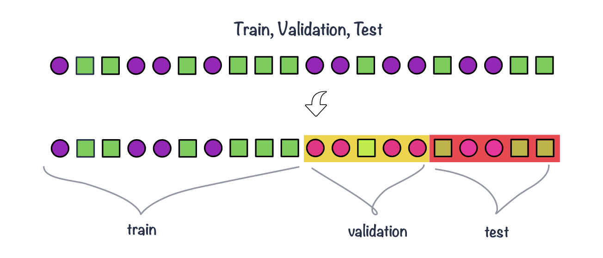

flowchart TD
A([data]) -. split data \n e.g. basic, stratified, grouped -.-> B([non-test set])
A([data]) -.-> C([test set])
B -.-> D(choose algorithm \n e.g. KNN)
D -.-> E(choose evaluation metric \n e.g. overall accuracy)
E -.-> F(feature engineering & selection)
F -.-> G(prepare parameter space, e.g. odd k-values from 3 to 30)
G -. split non-test -.-> H([train set & validation set])
H -.-> J(fit model on train set)
J -.-> K(collect evaluation metric on validation set)
K -.-> L{all values checked? \n e.g. k more than 30}
L -. No .-> J
L -. Yes .-> M(select best parameter values)
M -.-> N(fit model on all non-test data)
N -.-> O(assess model on test data)
C -.-> O
1 Supervised learning
1.1 What is supervised learning?
- Supervised learning can be used for classification, e.g. given a new biopsy sample we want to tell whether it contains tumor tissue (Yes/No) and for regression, e.g. given a new measurements of the methylation sites we want to forecast epigenomic age.
- In supervised learning we are using sample labels to train (build) a model. We then use the trained model for interpretation and prediction.
- This is in contrast to previously discussed unsupervised learning such as clustering or PCA - methods that we were using to find patterns in the data. We treated data set a a whole, using measurements for all samples but not the samples labels such as sample groups to find the components with the highest variables (PCA) or the optimal number of clusters (k-means).
- Training a model means selecting the best values for the model attributes (algorithm parameters) that allow linking the input data with the desired output task (classification or regression).
- Common supervised machine learning algorithms include K-Nearest Neighbor (KNN), Support Vector Machines (SVM), Random Forest (RF) or Artificial Neural Networks (ANN). Many can be implemented to work both for classifying samples and forecasting numeric outcome.
1.2 Outline
Across many algorithms and applications we can distinguish some common steps when using supervised learning. These steps include:
- deciding on the task: classification or regression
- splitting data to keep part of data for training and part for testing
- selecting supervised machine learning algorithms to be trained (or a set of these)
- deciding on the training strategy, i.e. which performance metrics to use and how to search for the best model parameters
- running feature engineering: depending on the data and algorithms chosen, we may need to normalize or transform variables, reduce dimensionality or re-code categorical variables
- performing feature selection: reducing number of features by keeping only the relevant ones, e.g. by filtering zero and near-zero variance features, removing highly correlated features or features with large amount of missing data present
The diagram below shows a basic strategy on how to train KNN for classification, given a data set with \(n\) samples, \(p\) variables and \(y\) categorical outcome
Before we see how this training may look like in R, let’s talk more about
- KNN, K-nearest neighbor algorithm
- data splitting and
- performance metrics useful for evaluating models
And we will leave feature engineering and feature selection for the next session.
1.3 Classification
- Classification methods are algorithms used to categorize (classify) objects based on their measurements.
- They belong under supervised learning as we usually start off with labeled data, i.e. observations with measurements for which we know the label (class) of.
- If we have a pair \(\{\mathbf{x_i}, g_i\}\) for each observation \(i\), with \(g_i \in \{1, \dots, G\}\) being the class label, where \(G\) is the number of different classes and \(\mathbf{x_i}\) a set of exploratory variables, that can be continuous, categorical or a mix of both, then we want to find a classification rule \(f(.)\) (model) such that \[f(\mathbf{x_i})=g_i\]
1.4 KNN example
Algorithm
- Decide on the value of \(k\)
- Calculate the distance between the query-instance (observations for new sample) and all the training samples
- Sort the distances and determine the nearest neighbors based on the \(k\)-th minimum distance
- Gather the categories of the nearest neighbors
- Use majority voting of the categories of the nearest neighbors as the prediction value for the new sample
Euclidean distance is a classic distance used with KNN; other distance measures are also used incl. weighted Euclidean distance, Mahalanobis distance, Manhattan distance, maximum distance etc.
1.5 Data splitting
- Part of the issue of fitting complex models to data is that the model can be continually tweaked to adapt as well as possible.
- As a result the trained model may not generalize well on future data due to the added complexity that only works for a given unique data set, leading to overfitting.
- To deal with overconfident estimation of future performance we can implement various data splitting strategies.
train, validation & test sets
- Common split strategies include 50%/25%/25% and 33%/33%/33% splits for training/validation/test respectively
- Training data: this is data used to fit (train) the classification or regression model, i.e. derive the classification rule
- Validation data: this is data used to select which parameters or types of model perform best, i.e. to validate the performance of model parameters
- Test data: this data is used to give an estimate of future prediction performance for the model and parameters chosen

cross validation
- It can happen that despite random splitting in train/validation/test dataset one of the subsets does not represent data. e.g. gets all the difficult observation to classify.
- Or that we do not have enough data in each subset after performing the split.
- In k-fold cross-validation we split data into \(k\) roughly equal-sized parts.
- We start by setting the validation data to be the first set of data and the training data to be all other sets.
- We estimate the validation error rate / correct classification rate for the split.
- We then repeat the process \(k-1\) times, each time with a different part of the data set to be the validation data and the remainder being the training data.
- We finish with \(k\) different error or correct classification rates.
- In this way, every data point has its class membership predicted once.
- The final reported error rate is usually the average of \(k\) error rates.

repeated cross validation
- In repeated cross-validation we are repeating the cross-validation many times, e.g. we can create 5 validation folds 3 times
Leave-one-out cross-validation
- Leave-one-out cross-validation is a special case of cross-validation where the number of folds equals the number of instances in the data set.

1.6 Evaluating classification
- To train the model we need some way of evaluating how well it works so we know how to tune the model parameters, e.g. change the value of \(k\) in KNN.
- There are a few measures being used that involve looking at the truth (labels) and comparing it to what was predicted by the model.
- Common measures include: correct (overall) classification rate, missclassification rate, class specific rates, cross classification tables, sensitivity and specificity and ROC curves.
Correct (miss)classification rate
- The simplest way to evaluate in which we count for all the \(n\) predictions how many times we got the classification right. \[Correct\; Classifcation \; Rate = \frac{\sum_{i=1}^{n}1[f(x_i)=g_i]}{n}\] where \(1[]\) is an indicator function equal to 1 if the statement in the bracket is true and 0 otherwise
Missclassification Rate
Missclassification Rate = 1 - Correct Classification Rate
Confusion matrix
Confusion matrix allows us to compare between actual and predicted values. It is a N x N matrix, where N is the number of classes. For a binary classifier we have:
| Predicted Positive | Predicted Negative | |
|---|---|---|
| Actual Positive | True Positive (TP) | False Negative (FN) |
| Actual Negative | False Positive (FP) | True Negative (TN) |
Based on the confusion matrix, we can derive common performance metrics of a binary classifier:
Accuracy: measures the proportion of correctly classified samples over the total number of samples. \[ACC = \frac{TP+TN}{TP+TN+FP+FN}\].
Sensitivity: measures the proportion of true positives over all actual positive samples, i.e. how well the classifier is able to detect positive samples. It is also known as true positive rate and recall. \[TPR = \frac{TP}{TP + FN}\]
Specificity: measures the proportion of true negatives over all actual negative samples, i.e. how well the classifier is able to avoid false negatives. It is also known as true negative rate and selectivity. \[TNR = \frac{TN}{TN+FP}\]
Precision: measures the proportion of true positives over all positive predictions made by the classifier, i.e. how well the classifier is able to avoid false positives. It is also known as positive predictive value \[PPV = \frac{TP}{TP + FP}\]
ROC AUC: the receiver operating characteristic (ROC) curve is a graphical representation of the trade off between sensitivity and specificity for different threshold values. The area under the ROC curve (AUC) is a performance metric that ranges from 0 to 1, with a higher value indicating better performance. AUC is a measure of how well the classifier is able to distinguish between positive and negative samples.
1.7 Evaluating regression
The idea of using data splits to train the model holds for fitting regression models. We can use data splits to train and assess regression models. For instance thinking back about the regression examples we have seen in previous section, we could try to find the best regression model to predict BMI given all other variables in the diabetes data set such as age, waist or cholesterol measurements. In the next section we will also learn about regularized regression where a penalty term is added to improve the generalization of a regression model; the penalty term(s) is optimized during the training of the model. Some common performance metric used in supervised regression include:
- R-squared: As seen in the linear regression session. \[ R^2=1-\frac{RSS}{TSS} = 1 - \frac{\sum_{i=1}^{n}(y_i - \hat{y_i})^2}{\sum_{i=1}^{n}(y_i - \bar{y})^2} \]
- Adjusted R-squared: seen before \[ R_{adj}^2=1-\frac{RSS}{TSS}\frac{n-1}{n-p-1} = 1 - \frac{\sum_{i=1}^{n}(y_i - \hat{y_i})^2}{\sum_{i=1}^{n}(y_i - \bar{y})^2}\frac{n-1}{n-p-1} \]
- Mean Squared Error (MSE): average squared difference between the predicted values and the actual values. \[MSE = \frac{1}{N}\sum_{i=1}^{N}({y_i}-\hat{y}_i)^2\]
- Root Mean Squared Error (RMSE): square root of the MSE \[RMSE = \sqrt{\frac{1}{N}\sum_{i=1}^{N}({y_i}-\hat{y}_i)^2}\]
- MAE: average absolute difference between the predicted values and the actual values \[MAE = \frac{1}{N}\sum_{i=1}^{N}|{y_i}-\hat{y}_i|\]
- Mean Absolute Percentage Error (MAPE): average percentage difference between the predicted values and the actual values.